상남자와 그의 여자 - 바그라티온과 예카테리나
게시: 2018-04-18T19:14:07+09:00
* 러시아와 프랑스의 대표 상남자와 그들의 여자 이야기를 각각 1편씩 재업 합니다.
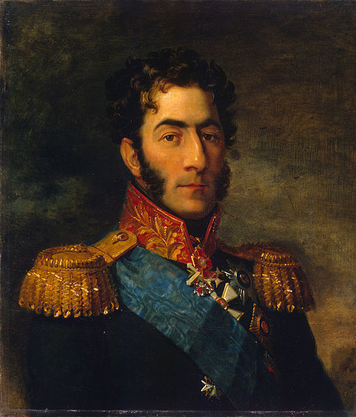
(표트르 바그라티온 장군입니다. 약간 매부리 코인데요 ?)
프랑스의 상남자라면 저는 단연 장 란(Jean Lannes)을 뽑습니다만, 러시아에도 상남자로 불릴 만한 사내가 있었습니다. 바로 바그라티온 장군입니다. 동향 사람인 스탈린이 나중에 히틀러에 대한 대반격 작전 이름을 바로 이 장군의 이름으로 붙였었지요.
표트르 바그라티온의 정식 명칭은 Prince Pyotr Ivanovich Bagration, 즉 바그라티온 왕자였습니다. 왕자라니, 바그라티온이 로마노프 왕가의 아들이었나요 ? 아닙니다. 일단 여기서 prince라는 명칭은 왕의 아들이라기 보다는, 공작(duke)보다는 더 높으나 왕(king)보다는 더 낮은 직위를 뜻하는 것입니다. 즉 prince라고 해서 꼭 왕의 아들이거나 나중에 왕이 되어야 하는 것은 아니었습니다. 가령 오스트리아의 외교관 메테르니히도 prince의 작위를 받았고, 나폴레옹의 참모장이었던 베르티에도 prince가 됩니다. 우리 말로는 '왕자'가 아니라 그냥 '대공' 정도가 좋은 번역으로 보이지만, 사실 prince 바로 밑의 직위에 archduke라는 것이 있는데, 이것이 바로 대공 (대공작)으로 번역되기 때문에 '왕공'이라는 손발이 오글거리는 단어 외에는 적절한 단어가 없습니다. 아무튼, 바그라티온은 분명히 왕가의 자제였습니다.
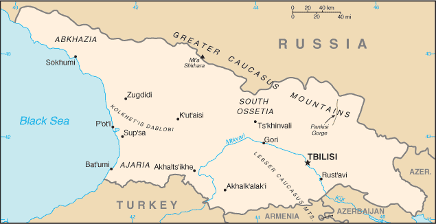
(현재의 그루지아, 아니 이젠 영어식으로 조지아의 지도입니다. 2008년도 남 오세아티아와의 국경분쟁으로 인해 러시아와 전쟁을 치룬 나라로 잘 알려져 있습니다. 저 지도 중앙의 고리(Gori)라는 도시까지 러시아 군이 점령했엇지요. 원래부터 그루지아는 영어로는 Georgia인데, 당시 조지아 주에 사는 어떤 멍청한 미국인이 '러시아 군이 조지아를 침공했다는데 나 피난가야 하는 거냐 ? 그런데 왜 이렇게 조용하냐 ?'라고 게시판에 올린 것이 유머 코너의 인기 기사였습니다.)
그렇지만 바그라티온은 러시아 인이 아니었습니다. 그의 출생지는 키즐라(Kizlyar)라는 곳으로서, 지금은 러시아 내 다게스탄(Dagestan) 공화국의 카스피 해 연안 지방이었습니다. 당시 그 곳은 그루지아(영어로는 Georgia) 땅이었고, 그루지아를 지배하던 바그라티오니(Bagrationi) 가문이 다스리는 곳이었습니다. 그루지아는 7세기 무렵 아랍 세력에게 정복당하기도 했으나, 9세기에 아쇼트 1세(Ashot Kurapalat)가 최초의 바그라티오니 왕조를 설립하면서 그 번성이 시작되었습니다. 서유럽에 그루지아의 존재가 알려진 것은 제1차 십자군이 벌어지던 11세기 무렵이었는데, 이때 그루지아와 대적하던 페르시아 인들이 그루지아를 '늑대의 땅'이라고 부르던 것이 유럽인들에게 '구륵(Gurg)'이라고 불리면서 이름이 그렇게 굳어졌다는 말도 있고, 용을 무찔렀다는 성 게오르기우스 (St. Georgius)를 숭배하는 땅이라고 해서 십자군들에게서 Georgia라는 이름을 얻었다는 말도 있습니다. 아무튼 그런 것들은 다 외국이 그루지아를 부르는 이름(exonym)이고, 정작 그루지아 인들은 자신들의 나라를 Sakartvelo, 즉 사카르트벨로라는 이름으로 부릅니다.
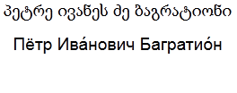
(저 위의 꼬부랑 글씨가 그루지아 글자로 쓴 표트르 바그라티온이라는 글자입니다. 아래는 러시아 키릴 문자로 쓴 표트르 이바노비치 바그라티온이라는 글자입니다. 저 대학 다닐 때 교양 러시아어 한 학기 들었습니다.)
12세기에 전성기를 맞았던 그루지아 왕국은 그 누구도 피해갈 수 없는 신의 채찍, 즉 몽골 제국의 침입에 속절없이 무너졌고, 이후 뒤를 이어 나타난 오스만 투르크 및 페르시아 왕국의 거듭된 침략으로 쇠약해졌습니다. 게다가 바그라티오니 왕가의 내분까지 겹쳐 왕국이 여러 개의 소왕국으로 조각나기도 했지요. 1783년, 페르시아의 침략을 견디다 못한 동부 그루지아의 왕은 러시아와 방위 협정을 맺습니다만, 정작 1785년과 1795년에 페르시아의 대대적 침공으로 그 수도인 트빌리시(Tbilisi)가 함락되고 많은 주민들이 학살될 때 러시아는 그저 팔짱만 끼고 구경을 할 뿐이었습니다. 더 나아가 1800년 12월 러시아는 아예 조약을 깨고 동부 그루지아를 합병하고 바그라티오니 왕조를 폐지해버렸습니다. 이때 러시아의 짜르는 바로 알렉상드르의 아버지이자 곧이어 암살당하는 파벨 1세(Pavel I) 였습니다. 그가 그루지아를 합병한 것은 어디까지나 바그라티오니 가문의 왕 그루지아 12세(George XII)의 요청에 의한 것이었다고 핑계를 달았지요. 그루지아의 귀족들은 이 조치에 강경하게 반항했으나, 러시아의 짜르에게 충성을 맹세하지 않는 귀족들을 모조리 체포함으로써 이 저항도 곧 수그러들 수 밖에 없었습니다. 서부 그루지아도 몇년 후에 병합되어 버렸습니다.
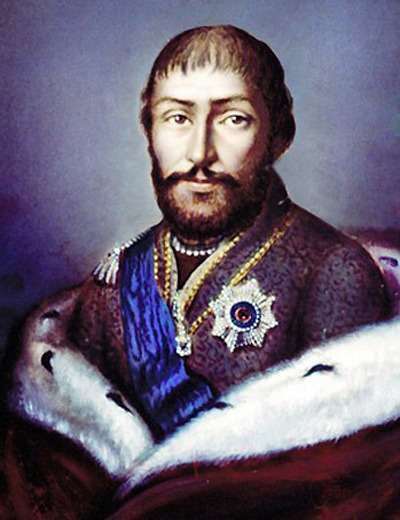
(동부 그루지아의 마지막 왕 그루지아 12세입니다.)
결국 바그라티오니 가문의 왕족들은 러시아의 하급 귀족으로 통합되었습니다. 하지만 그런 조치에 대한 불만을 잠재우기 위해서, 그 중에서도 특출난 인물에 대해서는 눈에 확 띄는 대우를 해주어 본보기로 삼을 필요가 있었지요. 그 대상으로 선정된 것이 바로 표트르 바그라티온이었습니다.
바그라티온은 바그라티오니 가문의 적자 같은 귀한 신분은 아니었고, 선대 그루지아 왕의 사생아였던 이샤크 벡(Ishaq Beg, 나중에 기독교로 개종하고 알렉산더로 개명)의 손자였습니다. 아샤크, 아니 알렉산더는 본국에서의 권력 싸움에서 패배한 뒤 러시아로 달아나, 러시아 군 장교로 생활한 사람이었습니다. 그의 아들이자 바그라티온의 아버지인 이반(Ivan Alexandrovich Bagration)도 러시아 군에서 대령 계급까지 지냈습니다. 이런 배경 덕분에, 표트르 바그라티온은 그저그런 어린 시절을 보냈습니다. 그는 1782년 17세의 나이에 러시아 남부의, 아버지가 근무하던 연대에 하사관으로 입대하여 군 생활을 시작했습니다. 러시아 남부의 이런저런 소규모 전투에 참전하면서 경력을 쌓은 그는 10년 후인 1792년 비로소 대위 계급으로 임관했는데, 이때부터는 정신이 핑핑 돌 정도로 고속 승진을 거듭하여 2년 뒤 소령 에 이어 같은 해에 중령까지 진급했고, 다시 4년 뒤인 1798년에는 대령, 바로 또 1년 뒤에는 장군으로 승진했습니다. 사실 바그라티온이 뭐 별로 전공을 쌓은 것도 없는데 이런 초고속 승진을 시켜 주었던 것은 러시아에게 뭔가 꿍꿍이가 있었다고 밖에 볼 수 없었습니다.
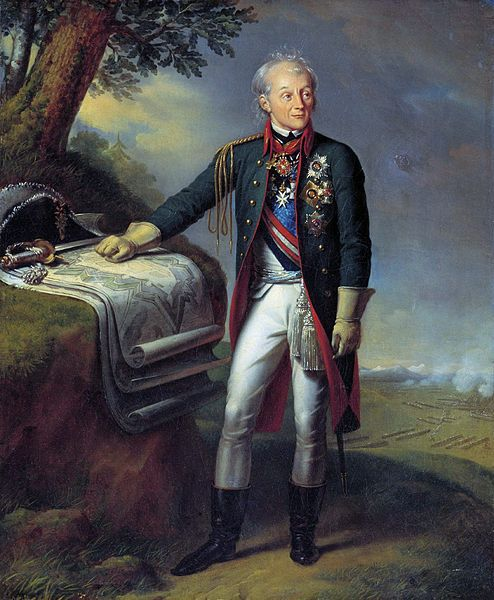
(나폴레옹의 호적수 제1 후보였을 만큼 당대의 명장이었던 러시아의 수보로프 장군입니다. 그는 러시아 인들 뿐만 아니라, 당시 스위스 맟 이탈리아 등의 현지인들로부터 상당한 존경을 받았다고 합니다.)
하지만 그는 1799년에는 수보로프(Suvorov) 장군의 이탈리아-스위스 원정에 참전하면서, 수보로프 장군의 높은 평가를 받으며 비로소 군 내에 실력으로 그 이름을 알리기 시작했습니다. 나폴레옹이 1796년의 1차 이탈리아 침공 때 근거지로 삼았던 도시 브레시아(Brescia) 점령 작전에서 인상적인 활약을 펼쳤다고 합니다. 하지만 그의 이름이 러시아 내에 널리 알려지게 된 것은 전혀 뜻 밖의 이유에서였습니다.
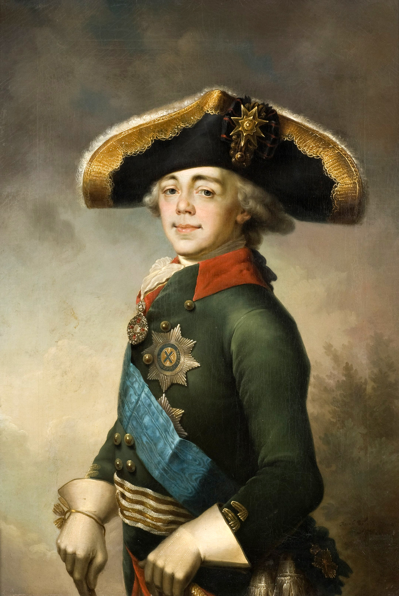
(좀더 젊은 시절의 파벨 1세의 모습입니다. 저 맹한 8시 20분 스타일의 눈꼬리가 저 양반 얼굴의 특색인 모양입니다. 모든 그림에서 그런 모습으로 그려졌네요.)
제2차 대불 동맹 전쟁을 끝내고 돌아온 그는 러시아 궁정 내에서 어느 정도 이름 있는 인물이 되었고, 특히 파벨 1세가 그루지아 병합을 획책하고 있는 마당에 그루지아 망명 귀족이라고 할 수 있는 그의 입지가 올라가는 것이 필요한 상황이었습니다. 1800년 당시 바그라티온 장군은 35세의 한창 나이였는데, 그 나이 때의 상남자가 가장 관심을 가질 것이 무엇이었겠습니까 ? 예, 바로 여자, 그것도 예쁜 여자였습니다. 그 중에서도 가문과 재산이 화려한 여자라면 더욱 좋았겠지요. 당시 러시아 상류 사회에서 최고의 신부감으로 이름을 떨치던 여자가 있었습니다. 바로 예카테리나 스카브론스카(Ekaterina Skavronska)였습니다. 당시 방년 17세였던 이 귀족 아가씨는 나폴리 전권 대사였던 스카브론스키(Pavel Martinovich Skavronsky) 공작의 딸이자 포템킨 (Potemkin) 왕공의 조카 딸로서 으리으리한 가문의 딸이었습니다. 그리고, 무엇보다도 엄청난 미모의 아가씨였다는 점이 더 중요했습니다. 그야말로 당시 상트 페테르부르그 사교계의 꽃이라고 할 수 있었지요. 예카테리나 2세 여제가 세운 학교에서 서구적인 교육까지 받은, 당대의 엄친딸이었습니다. 당연히 바그라티온의 마음을 사로 잡고 있던 여자는 바로 이 아가씨였습니다.
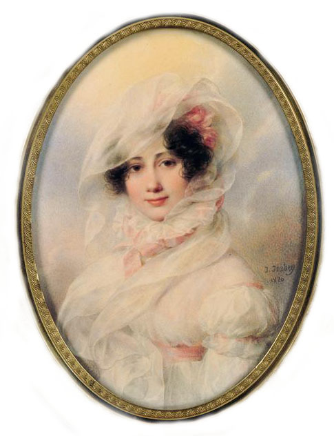
(젊은 시절의 예카테리나 바그라티온 입니다. 이쁜가요 ? 흠... 금발이라던데 여기서는 흑발이네요 ?)
당시 파벨 1세는 뜬금없이 말타 기사단장의 직위를 맡는 등 그 괴짜 성격으로 유명했는데, 바그라티온이 예카테리나를 흠모하고 있다는 별로 놀랍지 않은 (당시 이 아가씨에게 혹하지 않은 남자가 없었으니까요) 사실을 알고는, 어느날 갑자기 바그라티온 장군과 예카테리나의 결혼을 일방적으로 발표해버리고는 1800년 9월 2일 이 둘을 결혼시켜 버립니다. 이 조치는 아무리 파벨 1세가 괴짜라고 해도 너무나 당혹스러운 것이었습니다. 심지어는 당사자인 바그라티온조차도 깜짝 놀라고 황당해 했다고 합니다. 또 한명의 당사자인 예카테리나의 슬픔은 말할 것도 없었을 것입니다. 당시 이 아가씨는 팔렌 공작(Peter von der Pahlen)이라는 중년의 미남과 사랑에 빠진 상태였거든요. 팔렌 공작보다 20살이나 젊은 그루지아산 종마 바그라티온이 예카테리나의 마음을 사로잡기에는 부족한 면이 있었을까요 ? 예, 결정적으로 바그라티온은 상남자이긴 했지만 결정적으로 못 생긴 편이었다고 합니다. 프랑스 혁명을 피해 러시아에 망명을 해온 프랑스 귀족 장군이던 랑게론 공작(Louis Alexandre Andrault de Langéron)도 이런 말을 남겼습니다.
"이 부유하고 윤기가 흐르는 아가씨는 그에게는 전혀 어울리지 않는다. 바그라티온은 그저 일개 군인일 뿐이라서 말투나 행동거지도 촌티가 난다. 게다가 그는 매우 못 생겼다. 그의 아내가 되는 아가씨의 얼굴이 하얀 만큼, 그의 얼굴은 시커멓다. 그 아가씨는 천사처럼 아름답고 상트 페테르부르그의 미녀들 중 가장 활발한 미녀이다. 그녀는 결코 이런 남편과 행복하게 지낼 수 없을 것이다."
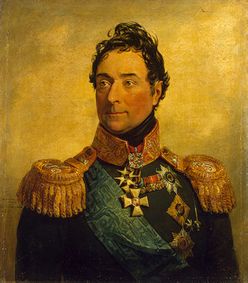
(랑게론 장군은 아우스테를리츠 전투에서도 활약했고, 부르봉 왕가 복위 이후에도 프랑스로 돌아가지 않고 러시아 군에서 주로 투르크 군과 싸웠습니다. 1831년에 콜레라로 사망했습니다.)
속내야 어쨌건 간에, 바그라티온은 러시아 제일의 미녀를 와이프로 맞이했을 뿐만 아니라, 결혼 1달 뒤인 1800년 10월 15일에는 러시아 제국의 왕자(prince, Kniaz)라는 작위까지 부여받았습니다. 바로 그 두달 뒤인 12월에 파벨 1세는 위에서 이미 언급했다시피 바그라티온의 고향인 동부 그루지아를 병합해버리지요. 어찌 보면 바그라티온은 러시아 엘프 미녀를 한명 받고 나라를 팔아먹은 매국노가 되어 버린 셈이었습니다.
하지만 이 결혼은 그 누구에게도 긍정적인 결과를 낳지 못했습니다. 일단 파벨 1세는 목숨으로서 그 댓가를 치렀습니다. 설마 이런 식으로 애인을 빼앗겼기 때문은 아니었겠습니다만, 팔렌 공작이 주요 역할을 맡아서 자행된 암살 사건에서 파벨 1세가 1801년 3월에 살해된 것입니다. 그리고 억지로 한 결혼은 서구적인 교육을 받은 예카테리나 바그라티온 여사를 오래 붙들어 매지 못했습니다. 그리 원만하지 못했던 결혼 생활은 1805년 예카테리나가 특수 제작한 마차를 타고 서유럽으로 훌쩍 떠나버리면서 끝장이 났습니다. 상남자 바그라티온이 대번에 홀아비가 되는 순간이었습니다.
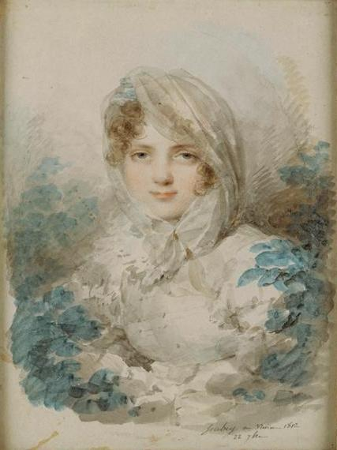
(1812년, 29세가 된 바그라티온 왕녀의 초상입니다. 여기서는 금발로 그려졌네요.)
남편 덕에 왕녀 타이틀이 붙은 이 아름다운 20대 초반의 여인은 가는 곳곳마다 대환영을 받았습니다. 그 미모와 재치, 교양은 물론이고, 특히 그 의상이 대단히 센세이셔널했기 때문이었습니다. 그녀는 각종 파티에 속옷도 입지 않은 채 거의 속이 비쳐보이는 얇은 모슬린으로 된 시-쓰루 의상을 즐겨 입고 나타났기 때문에, 그녀는 Le Bel Ange Nu, 즉 아름다운 누드 천사라는 별명이 붙을 정도였습니다. 설마 점잖은 19세기 초 유럽 상류 사회에서 그런 옷을 입고 다녔을까 싶겠습니다만, 사실 당시에 그런 누드 톤의 시-쓰루 의상이 상당히 유행했습니다. 1802년~1803년의 짧은 아미앵 평화 기간 중 파리를 방문한 영국인들은 일부 파리 여성들이 그런 옷을 입고 다니는 것을 보고 '여자들이 벌거벗고 다닌다' 며 놀라워 하기도 했습니다. 나폴레옹 전쟁을 배경으로 한 Bernard Cornwell의 역사 소설 Sharpe's Waterloo 편을 보면, 주인공 샤프 중령의 와이프인 제인이 파티에 가기 위해 속이 훤히 비치는 옷을 입으면서 가슴을 강조하기 위해 젖꼭지에 붉은 루즈를 칠하는 장면이 나옵니다. 알고 보면 나폴레옹 당시의 여성 패션이 상당히 충격적이었던 것이지요. 훗날 빅토리아 여왕 시대에 영국 수상을 지냈던 팔머스톤 경도 젊은 시절 이 바그라티온 왕녀를 만나 보았는데, 그 인상을 이렇게 적어 놓았습니다.
"투명한 인도제 모슬린 옷만 입고 있었는데, 몸에 착 달라붙어 몸매를 그대로 드러내 보였다. 천사같은 얼굴에 백옥같은 피부, 푸른 눈, 탐스러운 금발 머리를 가졌고, 30대의 나이에도 15살 짜리 소녀 같은 피부를 가지고 있었다."
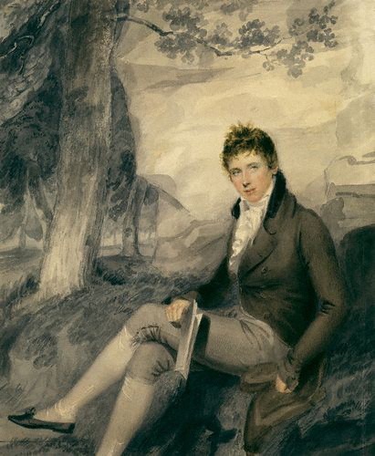
(1802년, 당시 18살이던 팔머스톤 경의 모습입니다. 팔머스톤 경은 바그라티온 왕녀보다 1살 어린 나이였습니다.)
팔머스톤 경이 바그라티온 왕녀의 미모에 혹했던 것을 비난할 수는 없습니다. 당대의 지성인 괴테도 이 왕녀를 만나보고는 그 미모에 감탄해마지 않았다고 하니까요. 바그라티온 왕녀가 이런 옷차림을 하고 유럽의 지성들과 철학과 정치만을 논했던 것은 당연히 아니었습니다. 그녀는 가는 곳곳마다 공공연하게 스캔달을 뿌리고 다녔습니다. 작센의 외교관인 폰 슐렌베르크 공작(Friedrich von Schulenberg), 뷔르템베르크의 왕자, 영국 귀족 스튜어트 경(Charles Stewart), 바이에른의 루드비히(Ludwig) 왕자 등 으리으리한 사람들의 그녀의 침대를 거쳐갔는데, 나중에는 오스트리아의 정치인 메테르니히(von Metternich)와 사실혼 관계에 들어가서 딸까지 두었습니다. 메테르니히와 그녀 사이에서 난 이 딸은 메테르니히 가문에서 키워 시집을 보낼 정도였습니다.
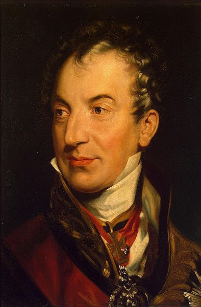
(나폴레옹을 물먹인 남자 메테르니히입니다. 그가 나폴레옹을 집요하게 괴롭힌 배경에는 바그라티온 왕녀가 있었습니다.)
와이프가 이렇게 그야말로 유럽을 뒤집어 놓고 다니는 동안, 남편인 바그라티온은 줄기차게 편지를 보내 와이프에게 돌아올 것을 부탁했습니다. 하도 애절한 편지를 하도 많이 보내는 바람에 유럽에서 그녀와 있던 친구들조차 '나 같으면 돌아간다' 라는 반응을 보일 정도였으나, 이 아름다운 왕녀는 시커먼 얼굴의 그루지아 상남자에게는 돌아가고 싶지 않았습니다. 그러면서도 이 여자는 남편에게 꼬박꼬박 소식을 보내기는 했습니다. 그 내용은 100% 청구서였습니다. 아무리 인기가 있다고 해도 연예인이 아닌 이상 그 인기로 돈을 벌 수는 없었고, 오히려 그 인기를 유지하기 위해서는 엄청난 생활비와 유흥비를 써대야 했습니다. 그 비용 청구서만 꼬박꼬박 남편에게 날아갔던 것입니다. 그런데 상남자=호구였는지, 바그라티온 장군은 이 청구서를 성실히 지불하여 와이프가 돈 때문에 창피한 일을 당하지 않도록 했습니다. 오죽하면 바그라티온 왕녀의 친모조차도 자기 딸의 뻔뻔스러움과 낭비를 비난했는데, 이 우직한 그루지아 상남자는 자신의 장모에게 '내 와이프를 비난하지 말라'며 역정을 냈다고 합니다. 나폴레옹과의 전투가 일단락된 1808년, 그 동안의 전쟁에서 공을 세운 장군들의 부인에게 훈장이 주어졌는데, 이때 바그라티온 왕녀에게는 훈장이 주어지지 않았습니다. 사실상 남남이었으니까요. 그러나 바그라티온은 밸도 없이 "내 와이프인데 왜 훈장을 못 받나" 라며 항의를 했습니다.
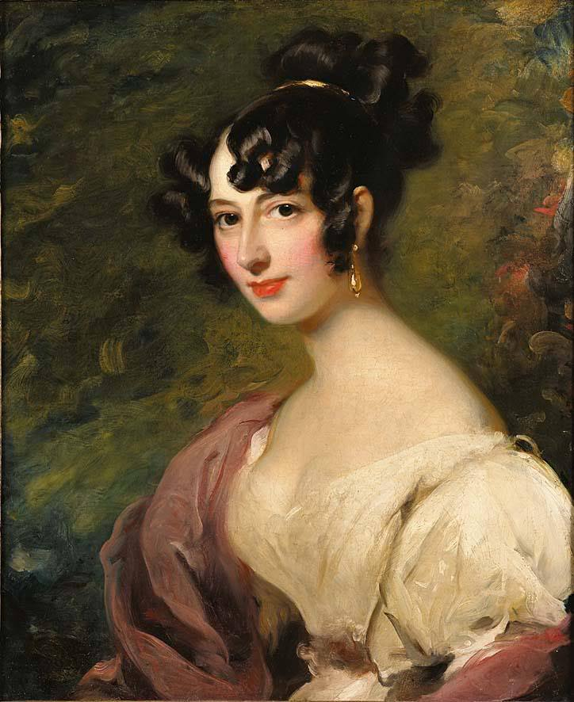
(정식 부인을 두고 바그라티온 왕녀와 놀아난 메테르니히가 부도덕하다고요 ? 당시 귀족 사회에서 그런 일은 아주 많았습니다. 이 여자는 당시 메테르니히의 또다른 러시아 출신 정부였던 도로테아 리벤 Dorothea von Lieven 입니다. 이 여자도 귀족 가문의 유부녀로서 러시아의 런던 대사의 와이프였는데, 런던에서 메테르니히와 놀아났을 뿐만 아니라 저 위에서 언급한 팔머스톤 경과도 관계를 가졌다고 합니다. 제 눈에는 이 여자가 훨씬 더 현대적인 러시아 엘프녀에 가까운 것 같습니다.)
그런데 사랑은 비극이라고, 이런 호구같은 남자 바그라티온을 사랑하는 여인이 또 있었습니다. 바로 짜르 알렉상드르의 여동생이자, 바그라티온 왕녀와 동명이인인 예카테리나(Ekaterina Pavlovna) 공주였습니다. 그녀는 이 듬직한 장군을 열정적으로 사랑했는데, 바그라티온은 이 공주님의 구애를 냉정하게 거부했습니다. 자신이 사랑하는 여자는 자신의 적법한 아내 예카테리나 바그라티온 뿐이라는 것이었지요. 심지어 나폴레옹도 (물론 정치적 이유에서였지만) 이 예카테리나 공주에게 구혼을 할 정도였지요. 그러나 바그라티온이 완강하게 구애를 거부하자, 결국 예카테리나 공주는 자신의 사촌뻘이자 뷔르템베르크의 왕자이자 나중에 왕이 되는 빌헬름 1세 (Wilhelm I)와 결혼을 해야 했습니다.
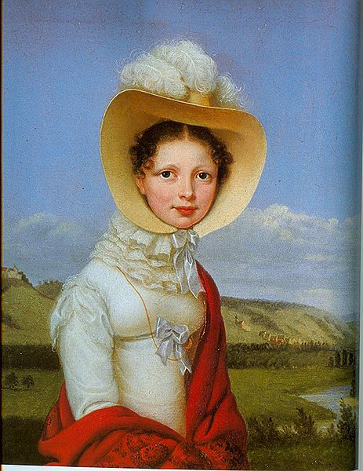
(예카테리나 파블로브나의 초상입니다. 흠... 바그라티온이 그녀의 애정 공세를 거절한 이유가 짐작이 가는데요...저 위에 나온 다른 러시아 여자들과는 확실히 좀 차이가 나네요.)
자신의 매정함 때문에 이런 비극이 일어나고 있는 것을 아는지 모르는지 바그라티온 왕녀는 아예 비엔나에 둥지를 틀고 바그라티온 장군의 주머니로 사교계를 주름잡고 있었습니다. 그녀의 살롱은 반-나폴레옹 인사들로 문전성시를 이루었고, 결국 오스트리아가 다시 나폴레옹을 배신하고 제5차 대불 동맹 전쟁에 뛰어드는 결과를 낳았습니다. 남편 바그라티온의 전사, 그리고 나폴레옹의 패망 이후에도 그녀는 화려한 삶을 계속 했습니다. 나폴레옹의 패망 이후 그녀는 거처를 비엔나에서 파리로 옮겼고, 발작(Balzac)이나 스탕달(Stendahl) 등의 대문호들과도 사귀었습니다. 빅토르 위고의 명작 레미제라블 끝부분에, 테나르디에가 마리우스로부터 돈을 뜯어내려고 귀족으로 변장을 하고 찾아왔을 때, 테나르디에가 허세를 부리며 '아마 우리가 전에 만난 적이 있는 것 같습니다... 바그라시옹 공작 부인의 살롱에서였나요 ?' 하고 말하는 장면이 나오는데, 그 바그라시옹 공작 부인이 바로 이 여자입니다. 바그라티온 왕녀는 이후에도 잘 먹고 잘 살다가 결국 1857년 74세의 나이로 천수를 누리고 베네치아에서 죽었습니다. 아마 된장녀로서는 더 이상 바랄 것이 없는 삶이었겠지요.
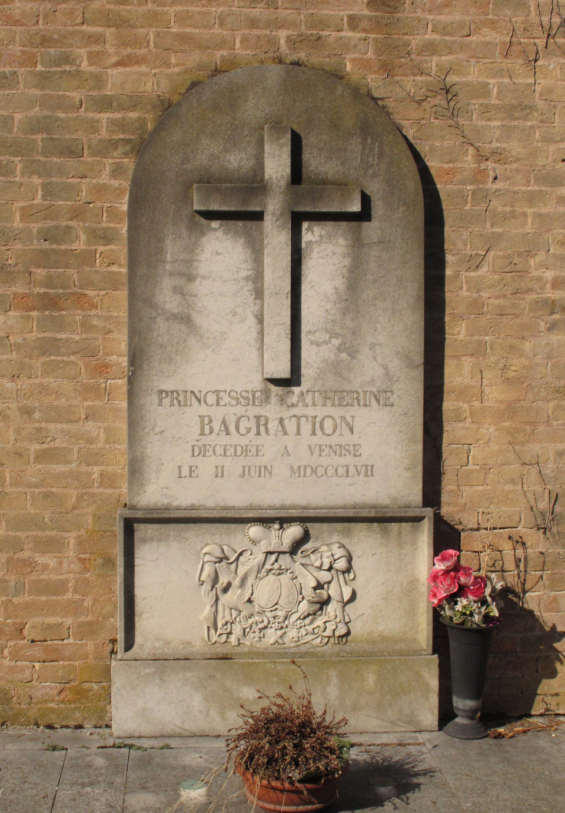
(베네치아에 있는 예카테리나 바그라티온의 묘비입니다. 이름도 아예 서구식으로 캐서린이라고 써놓았네요.)